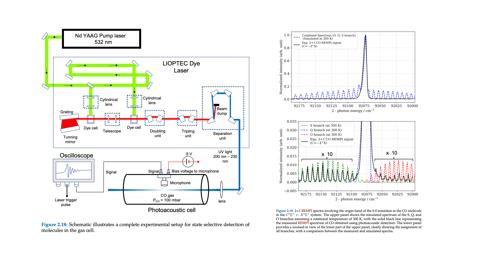

Research Overview

My research focuses on atomic and molecular beam experiments, gas--surface dynamics, and the development of precision diagnostic instrumentation. I am interested in understanding molecular-level interaction dynamics at surfaces and in building the tools needed to probe them with high sensitivity and control.
My work combines supersonic beam experiments, laser diagnostics, interferometric metrology, ion imaging, and ultra-high-vacuum instrumentation. Alongside fundamental surface-science studies, I develop compact beam sources and measurement tools for high-precision spectroscopy and beam characterization.
Selected Research Highlights
- Measured CO₂ dissociation probabilities on Cu(110) down to 10⁻⁵.
- Developed compact atomic and molecular beam source designs with high flux and low divergence.
- Built interferometric laser diagnostics including a high-precision wavemeter.
- Designed and optimized TOF-MS, velocity map imaging, and other custom detection systems.
Gas--Surface Reaction Dynamics

Does CO₂ Dissociate on Low-Index Copper Surfaces?
My doctoral research examined the dissociation dynamics of CO₂ on Cu surfaces under ultra-high-vacuum conditions. These studies showed that dissociation depends strongly on incident translational energy, molecular orientation, and vibrational excitation, providing insight into reaction pathways at metal surfaces.
View PublicationInstrumentation and Diagnostic Development

High-Precision Wavemeter
Developed a crossed-fringe Fizeau interferometer-based wavemeter for precision wavelength measurement and laser characterization, with part-per-billion-level performance.
Related Publications
Ultra-Stable He--Ne Laser
Developed a ppb-stabilized He--Ne laser system using feedback control electronics for precision optical diagnostics and calibration applications.
Related Publications
Spectrometer Development
Contributed to the development of a compact spectrometer platform for wavelength-resolved measurements and Raman-related applications, including calibration using known spectral references.
Related Publications
Photoacoustic Spectroscopy
Worked on sensitive photoacoustic detection methods for weak gas-phase transitions and precision spectroscopic studies.
Related Publications
Imaging and Ion-Optics Tools
Designed velocity-map imaging and spatial imaging systems for scattering studies, including ion-optics development, calibration, and detector integration.
Related Publications
Compact Atomic / Molecular Beam Source
Developed a compact high-flux, low-divergence atomic and molecular beam source. The design was optimized using CAD and MolFlow+ to improve source geometry and vacuum performance. Ongoing characterization includes time-of-flight measurements, and the source may also be adaptable for deposition applications and Doppler-reduced spectroscopy geometries.
Related Publications